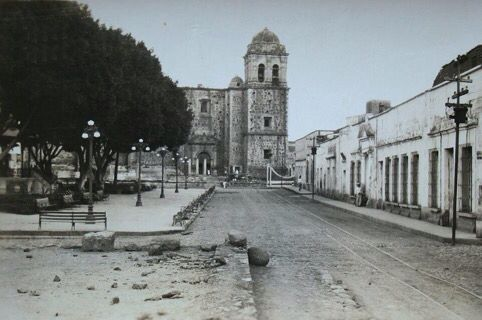
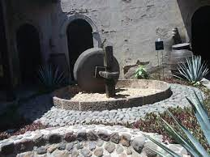

TEQUILA, JALISCO.
¿Qué es Tequila, Jalisco?
Los pobladores originales del territorio que ahora se conoce como Tequila, eran de las etnias chichimeca y otomí
El poblado de Santiago de Tequila fue fundado el 15 de abril de 1530
por franciscanos bajo las órdenes de fray Juan Calero,
trayendo para ello a indígenas del cerro del Chiquihuitillo.

La primera destiladora de Tequila:
En 1600, Pedro Sánchez de Tagle crea la primera destilería de bebida de agave,
el cual ya se consumía anteriormente pero sin destilar,
creando con ello la primera fábrica de tequila propiamente dicha

ES SITIO WEB SE ELABORO CON FINES EDUCATIVOS, COMO PARTE DE LA ACTIVIDAD DE LA MATERIA DE CONSTRUYE PAGINAS WEB
Profesor: Juan Carlos Mariscal Chavarin
Estudio en: CETIs no. 161
Nombre: Irma Monserrat Santana Arroyo Correo: monsesan137@gmail.com